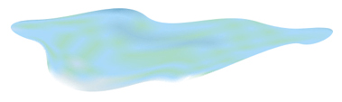
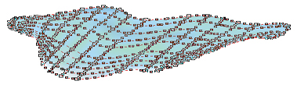
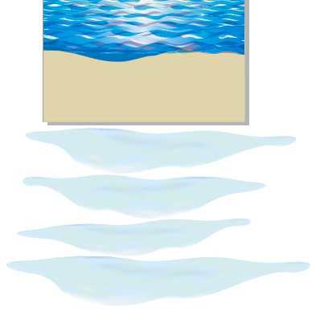
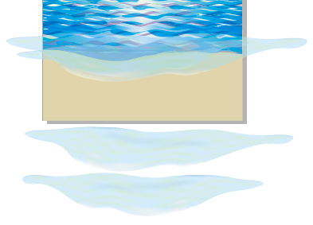
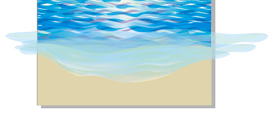
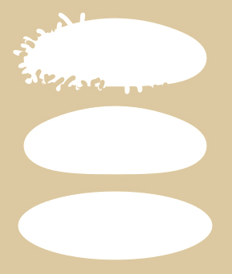
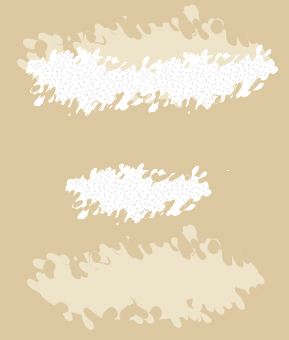

МОРЕ.ВОЛНА ПРИБОЯ
Это второй урок из цикла "Рисуем море". Тем, кто не знаком с первым, рекомендую:
http://cdrpro.ru/forum/45-736-1
Изображение моря станет более выразительным, если к нему добавить берег с волной прибоя.
Продлите холст снизу примерно на 1/4 ... 1/3 высоты рисунка и залейте это новое пространство цветом песка.
Затем нарисуйте контур вроде водяного языка, образующегося из выплеснувшейся на песчаный берег волны.
Теперь не пугайтесь те, кто ни разу не пробовал инструмент Заливка по сетке. Именно вам сейчас представляется благодатный случай попробовать его, не боясь всё испортить. Можно действовать смело, так как здесь не требуется «точного попадания», ведь волны могут быть разные.
Попробуйте создать нечто похожее на представленный ниже рисунок (а можно и не похожее по форме, но по цветам близкое к показанной гамме). Имейте ввиду, что не стоит стремиться здесь точно задавать цвета, так как в дальнейшем будет применена прозрачность.


Теперь нарисованной волне задайте примерно 50 %-ную прозрачность. Создайте несколько дублей и, смещая и трансформируя их, скомбинируйте совокупный объект, как показано на рисунках ниже.



Здесь главное, к чему надо стремиться – создать нерезкий переход от волны прибоя к нарисованному ранее морю. Это достигается несовпадением для дублированных объектов границы по верхнему краю за счёт трансформаций и искажений дублированных объектов, а также за счёт того, что по верхнему краю созданная фигура имеет также волнообразную линию, как и линии на рисунке моря, вместе эти линии, перемежаясь, создают общую картину волнистой поверхности.
В конце работы надо обрезать всё, что выступает за границы листа, но имейте в виду, что заливка по сетке после обрезки будет растрирована, то есть невозможно будет её редактирование именно как векторной заливки.
Теперь надо создать пенный край у волны. Поскольку это будет самый ближний план, то здесь надо создать более детальное изображение по сравнению с пенными гребешками при рисовании моря.
Создайте небольшой белый овал. Переведите в кривые. С помощью эффекта Оболочка можно немного изменить форму. Затем с помощью инструмента Размазывающая кисть, движениями как внутрь фигуры, так и изнутри наружу добивайтесь «разбрызгивания» по всему краю фигуры. (смотрите рисунок ниже).

Вот из таких отдельных пятен с размётанным в брызги краем выкладывайте пенную кайму волны. Не лишним будет создать и ещё одну цепочку таких же пятен, для которых задана прозрачность примерно 50 % (смотрите рисунок ниже).

Ещё для большей выразительности можно добавить несколько пенных гребней на переднем крае моря, используя такую же технику «разбрызганных пятен».
Специально для cdrpro.ru
Копирование урока или части его и воспроизведение любым способом без письменного согласия автора запрещено.
Класно!
Талант не пропьёшь!
Des425, sergey, Спасибо!